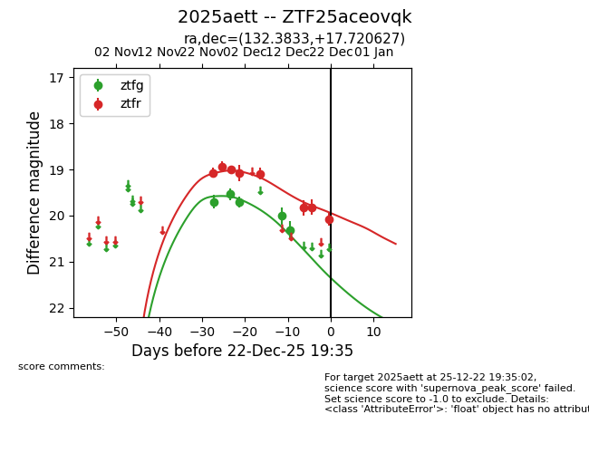
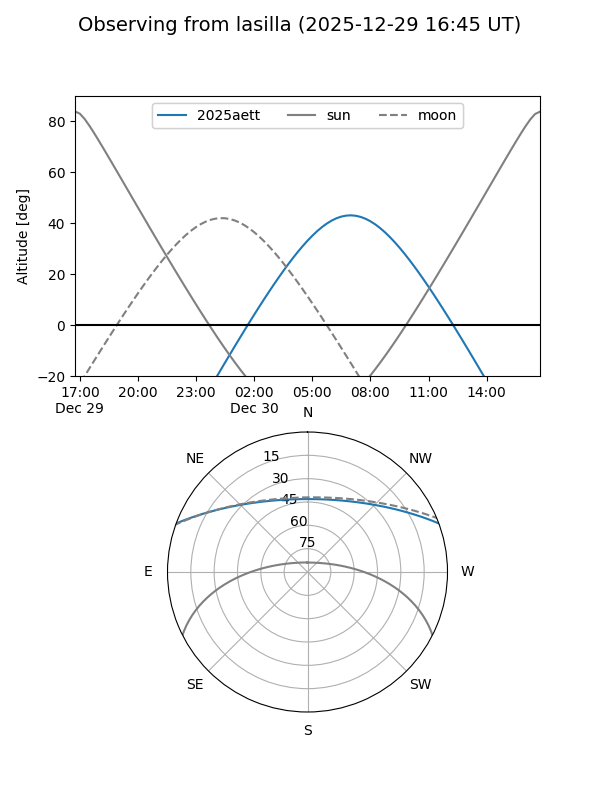
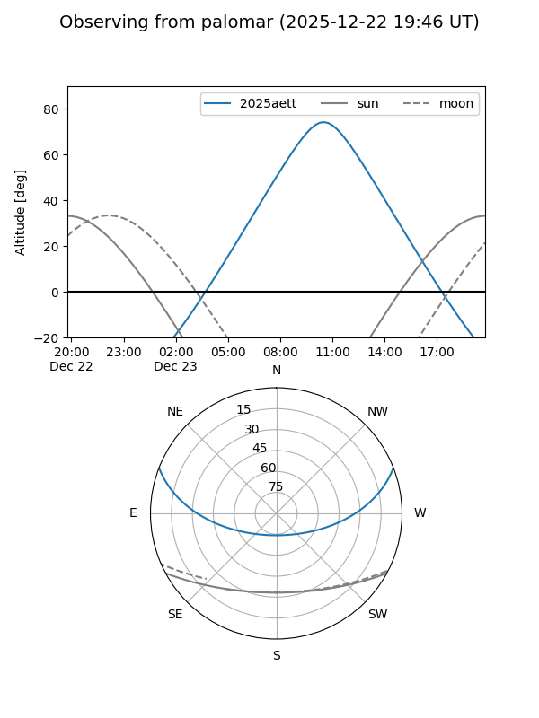
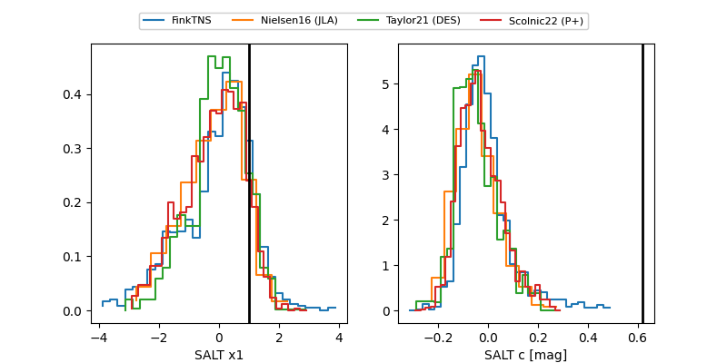

2025aett
Target 2025aett at 2025-12-31 18:00
Aliases and brokers:
FINK: link
Lasair: link
ALeRCE: link
TNS: link
YSE: link
alt names
ZTF25aceovqk (ztf,fink_ztf)
2025aett (tns,yse)
Coordinates:
equatorial (ra, dec) = 132.3833,+17.72063
equatorial (HMS+DMS) = 08:49:31.98,+17:43:14.26
galactic (l, b) = (209.0082,+33.81779)
Flags:
Photometry:
last ztfg=20.31, ztfr=19.84
5 ztfg, 9 ztfr detections
Lightcurve

Visibility


Additional plots
